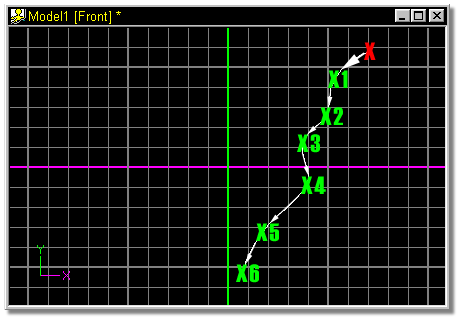
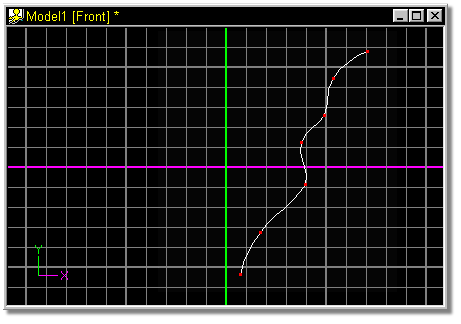

This spline adding technique is useful when you want to add a series of
control points, such as the a cross section for a lathe, without stopping. After
clicking the Add Lock Button, a new control point is added each time you click the
mouse button. To finish off the spline, and return to the Edit mode, press the
<Esc> key or click the right mouse button.
This spline adding technique is useful when you want to add a series of
control points, such as the a cross section for a lathe, without stopping. After
clicking the Add Lock Button, a new control point is added each time you click the
mouse button. To finish off the spline, and return to the Edit mode, press the
<Esc> key or click the right mouse button.
The default keyboard shortcut key for Add Lock is Shift+A.

Click the Add Lock button, then click in a model window (red X). Drag the mouse in the direction that the white arrows are pointing, clicking where indicated by green Xs.

After reaching the final point, press Escape or click the right mouse button to return to Edit mode.
The resulting spline:

Related Topics:
Adding Control Points
Attaching Control Points
Break Spline
Delete Control Point
Detach Point
Insert Control Point
Smooth
Peak
Magnitude
Bias